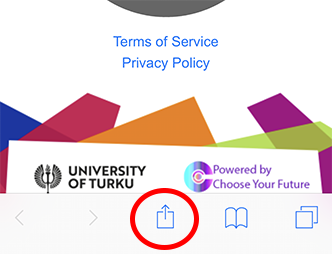
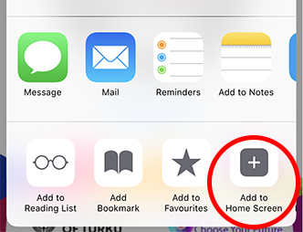
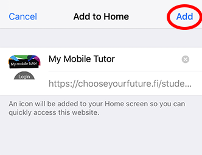

Lataamalla ja käyttämällä mobiilisovellusta hyväksyt käyttöehdot ja olet tutustunut tietosuojaselosteeseen.
By downloading and using the app you accept the Terms of Service and you have read the Privacy Policy.
LATAUSOHJEET - DOWNLOAD INSTRUCTIONS
1. Kun olet painanut iOS-laitteellasi yllä olevaa ‘Lataa - Download’ painiketta, napauta selaimen ‘Jaa/välitä’-painiketta (alareunassa keskellä).
1. After pushing the ‘Lataa - Download’ button with your iOS device, push the ‘Action’ button on your browser.
1. After pushing the ‘Lataa - Download’ button with your iOS device, push the ‘Action’ button on your browser.
2. Napauta ‘Lisää Kotivalikkoon’ -painiketta.
2. Push the ‘Add to Home Screen’ button.
2. Push the ‘Add to Home Screen’ button.
3. Paina ‘Lisää’ ja sovelluksen ikoni ilmestyy puhelimesi aloitusnäytölle. Napauta näytölläsi olevaa sovellusikonia ja kirjaudu palveluun UTU-tunnuksillasi. Sovellus avautuu iOS-laitteissa toistaiseksi puhelimen selaimeen*.
3. Push ‘Add’ and the app icon appears to your screen. You can now open the app and register in with your UTU username. By pushing the app icon on your screen, the app will open on a browser*.
3. Push ‘Add’ and the app icon appears to your screen. You can now open the app and register in with your UTU username. By pushing the app icon on your screen, the app will open on a browser*.
Tarvitsetko apua sovelluksen lataamisessa? Ota yhteyttä info[at]cyf.fi.
Need help in downloading? Contact us at info[at]cyf.fi.
*Sovellus on uuden ajan progressiivinen web-sovellus, jonka kaikkia ominaisuuksia Apple ei vielä tue. Applen tulevien päivitysten myötä myös iOS-laitteisiin tulee mahdollisuus käyttää tätä sovellusta ilman verkkoa ja koko näytön tilassa. Päivitämme nämä toiminnallisuudet sovellukseen heti, kun Apple julkaisee niitä tukevat päivitykset.
*My Mobile Tutor is a progressive web app, which is a new technology not yet fully supported by Apple. The app is fully functional, but please note that you need to be online, and the full-screen mode is not yet supported. Above mentioned functionalities will be updated to this app as soon as Apple starts supporting them.